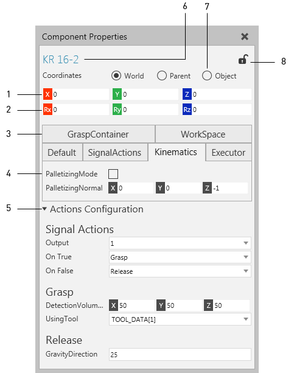
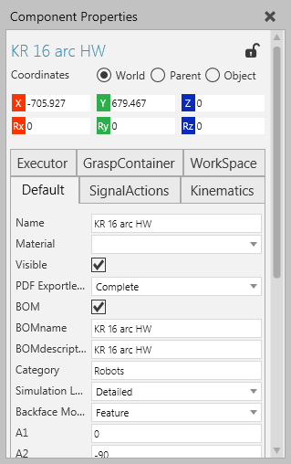
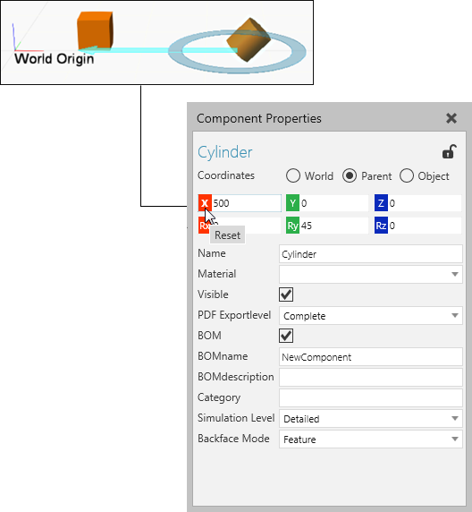
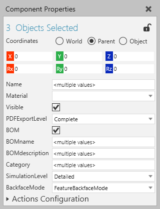

The Properties panel allows you to edit the properties of a selected object.

| 1. | Position Values |
| 2. | Orientation Values |
| 3. | Property Tabs |
| 4. | Property |
| 5. | Property Section |
| 6. | Name of Object |
| 7. | Coordinate System |
| 8. | Lock Editing |
Contents Hide
In some cases, the name of the Properties panel might be prefixed to indicate the object type of the current selection.

The position and orientation of an object is based on the active coordinate system in the scene.

The position of an object is defined in XYZ coordinate axes. Each axis button can be clicked to reset its value to zero or edited directly by clicking its field.
| Name | Description |
| World | Global coordinate system with fixed origin. Use this for global positioning of selected object in 3D world and drawing world. |
| Parent | Coordinate system of an object that the selected object is
attached to in a scene. The parent-child relationship of a selected
object determines its parent coordinate system. An object can
only have one parent.
Note: By default, components are attached to the 3D world, thereby World and Parent coordinate systems are the same. A component can be attached to a node of another component, thereby the location of that component can be determined relative to its parent node origin. This means when the parent node moves, the child components move with it to maintain their relative location to the parent origin. |
| Object | Coordinate system of a selected object with an origin relative to its current state. That is, a selected object can be moved relative to its current location. |
When two or more objects are selected, the Properties panel will display the selection count, the location of the last selected object, and properties that are common in all selected objects. This allows you to edit the properties of multiple objects.

A property field is marked <multiple values> to indicate that the property has a different value in one or more selected objects. In this case, the property may or may not need to have a unique value. For example, components must have unique names, so you should avoid editing the Name property.
Every component has a set of common properties that are created with the component at the time of creation.
| Name | Description |
| Name | Name of component. |
| Material | Material of the component and any of its child nodes and features which do not have an assigned material. |
| Visible | Turns on/off the visibility of the component. |
| PDF ExportLevel | Defines how the geometry of the component is exported to a 3D PDF file. |
| BOM | Turns on/off the inclusion of the component in a bill of materials table. |
| BOMname | Defines the name of the component in a bill of materials table. |
| BOMdescription | Defines the description of the component in a bill of materials table. |
| Category | Defines the Type metadata property of the component. |
| Simulation Level | Indicates the accuracy setting for simulating component movements.
Default Detailed Balanced Fast |
| BackfaceMode | Defines how the geometry of component not facing the 3D world camera is rendered in a scene. |